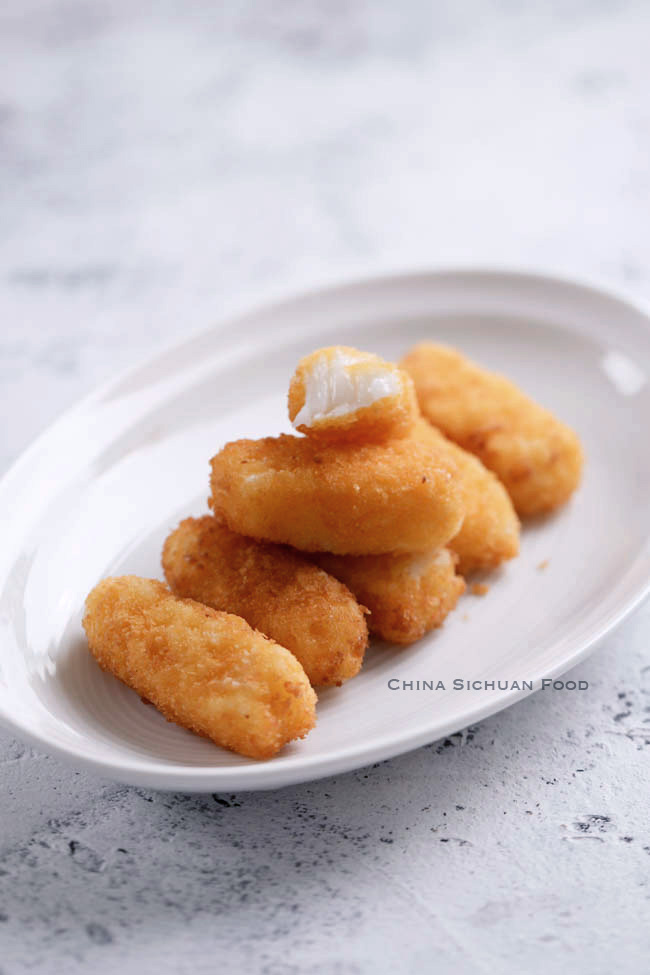

Fried Milk
Fried Milk Recipe

Ingredients
- 1 cup coconut milk
- ¼ cup milk
- 3 tbsp. cornstarch
- 3 tbsp. sugar
- 2 large eggs, whisked well for coating
- ¼ cup cornstarch for coating
- 1 cup breadcrumbs or oats
- Oil for deep-frying
Recipe
- In a small bow, add coconut milk, milk, cornstarch and sugar. Heat over slowest fire and until heating until thickened. In the process, stir in one direction.
- Transfer to a square baking pan and set aside to cool down in fridge. Transfer out and cut into small strips around 5 cm long and 3 cm wide.
- Coat with starch, egg and breadcrumbs in sequence.
- Heat oil to 160 degree C. Place 4-5 pieces on a flat strainer, dip the strainer in and fry until slightly golden brown and crispy. Repeat until all of the remaining pieces are fried. Remove extra oil with kitchen paper and serve directly.
- Absorb extra oil with kitchen paper and serve hot.